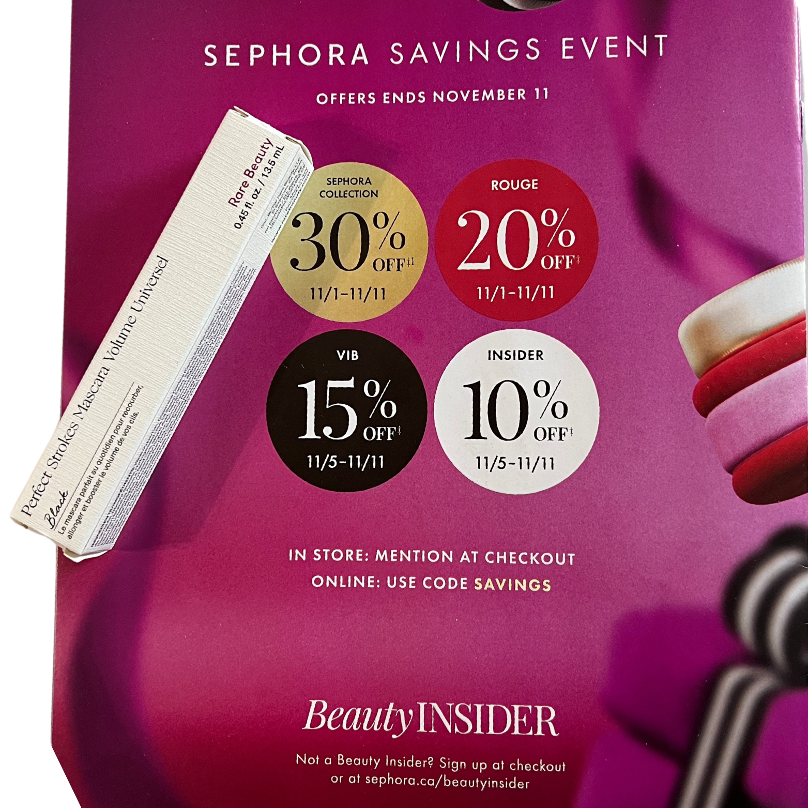

Packaging
The mascara comes in a sleek, minimalistic tube, staying true to Rare Beauty’s classic aesthetic. It’s super easy to grip, so even if you’re rushing through your morning routine, it’s easy to apply without slipping or smudging. The brush is also unique—it’s curved with alternating bristles, which makes it easy to coat each lash without missing any. This brush shape is great for getting both volume and length in one go.
